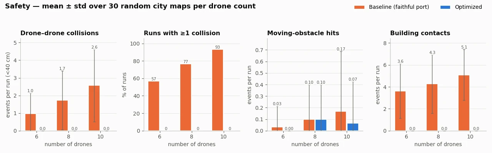
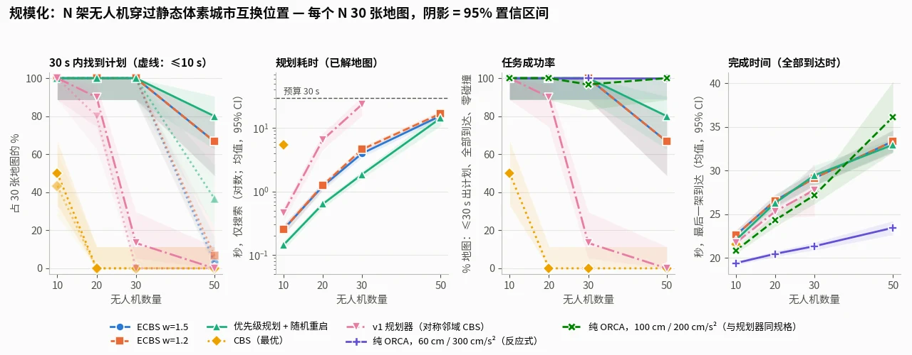
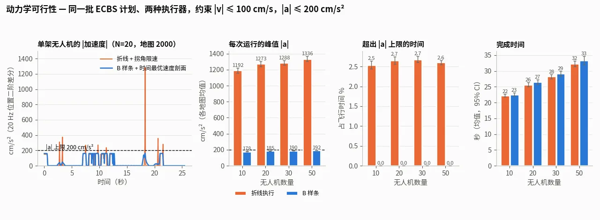
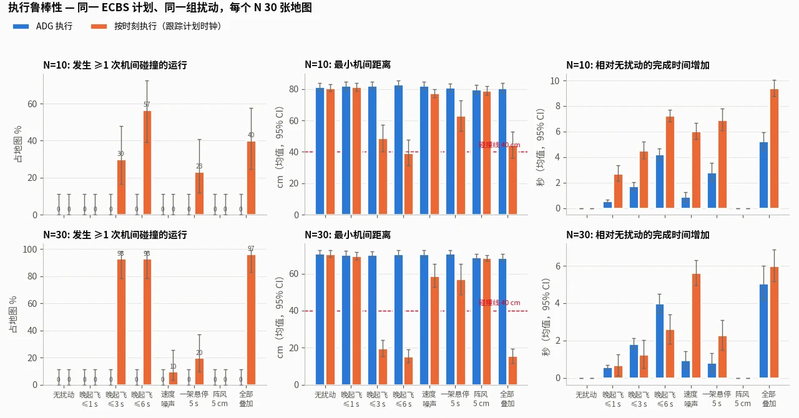

无人机集群路径规划
2025 年实习时，我在 UE5 里写了一套多无人机协同规划器。2026 年我把它逐函数移植成独立仿真，复盘原版为什么会撞，重做规划、平滑和执行三层；然后把规模扩到 50 架，和文献中的规划器、纯反应式避障对比，并检查轨迹能不能飞、执行出现延迟时会不会撞。
- 问题
- 10–50 架无人机在有建筑的三维空间里同时飞向各自目标，互不相撞，轨迹满足速度和加速度上限
- 我做的
- 原版：UE5 C++ 集群管理、A* 规划、预约表、平滑和雷达扫描。重做：移植与复盘、时空 A* / ECBS / 优先级规划、B 样条轨迹、动作依赖图执行
- 技术栈
- UE5 C++ · 时空 A* · CBS / ECBS · 优先级规划 · ORCA · B 样条 · 动作依赖图 · Python
- 评估
- 6–50 架，每档 30 张随机城市地图，起终点对穿强制冲突；均值与 95% 置信区间
- 结果
- 10 架时至少碰撞一次的飞行从 93% 降到 0。30 架、叠加延迟和噪声时，按时刻执行 97% 的飞行发生碰撞，动作依赖图执行 720 次全部 0 碰撞。
- 输掉的地方
- 最优 CBS 20 架起解不出；ECBS 不比优先级规划好；10–30 架时纯反应式 ORCA 更快到达。页面如实给出。
原版做了什么
原工程是 UE5 的 C++ 组件：三维栅格地图、每架无人机一个 A* 规划器、全局预约表记录别的无人机何时在哪，规划时避开预约冲突；规划出的折线经过迭代平滑，飞行中用多线射线扫描（ParallelFor 并行，16 线、10 Hz）检测移动障碍，必要时重规划。
UE5 工程依赖 Windows 和完整的场景资产，没法在现在的机器上直接跑。我把 Source/Drone/ 下的规划、预约、平滑、扫描逻辑逐函数移植到 Python，场景换成随机生成的体素城市，作为基线。
- 规划A* + 预约表
- 平滑迭代平滑 + 净空检查
- 执行射线扫描、近距离急停、重规划
为什么会撞
让 10 架无人机互换位置，原版几乎每张地图都会撞。逐行对照代码，问题在四处：
- A* 没有时间维。搜索状态只有空间格子，没有“原地等待”动作，预约表只能剪掉邻居，不能让一架机停下来让路。冲突检测只比较点，不检查两架机沿线段对穿。
- 时间轴对不上。所有无人机 t = 0 同时起飞；规划器按 100 cm/s 算预约时间，实际飞行速度不同；中途重规划时时间又从 0 开始。
- 平滑太脆。只要一个点不安全，整条路径就退回原始折线；膨胀半径接近 0 且允许对角穿角，会贴着楼角飞。
- 急停规则会连锁。“110 cm 内停 0.5 秒”对已经到达终点的无人机也生效，附近的无人机被反复急停，打乱原定的先后顺序。
方法一览
MAPF（多智能体路径规划）把地图离散成格子、时间离散成步，要求所有机器人的路径在任何时刻都不冲突。下表是本页出现的全部方法。
| 方法 | 怎么工作 | 性质 / 需要的信息 |
|---|---|---|
| 原版移植 | 按直线距离排优先级，逐架做没有时间维的 3D A*；用 160 cm / 0.04 s 的预约表剪枝 | 集中式；不完备，常产生冲突 |
| 时空 A* （Silver 2005） | 状态是“格子 × 时间步”，有等待动作，禁止穿角；启发式是静态地图上的 Dijkstra 距离 | 单机搜索，避让约束来自上层 |
| 优先级规划 + 随机重启 （Erdmann 与 Lozano-Pérez 1987） | 按顺序逐架用时空 A* 规划，后规划的避开前面已占的时空格；失败就随机换顺序重来，直到时间预算用完 | 集中式；不完备，没有最优性界 |
| CBS，Conflict-Based Search （Sharon 等 2015） | 先各自规划；高层找到一处冲突，就分裂成两个子问题，分别给两架机加约束重新规划；按总代价最小优先展开 | 集中式；最优且完备，但冲突多时约束树爆炸 |
| ECBS(w)，Enhanced CBS （Barer 等 2014） | CBS 的有界次优版：高层和低层都在“代价 ≤ w × 下界”的候选里选冲突最少的展开 | 集中式；解的代价 ≤ w × 最优 |
| 第一版重做的规划器 | 对称邻域约束 + 只在高层做 w = 1.15 的焦点搜索 | 后来发现会剪掉合法解，既不完备也不最优（见下文） |
| ORCA，Optimal Reciprocal Collision Avoidance （van den Berg 等 2011） | 不做全局规划：每架沿自己的最短路飞，每个控制步把期望速度投影到“与邻机、建筑都不会在 2 s 内相撞”的速度集合里 | 分布式；需要邻机位置和速度；没有无死锁保证 |
| 方法 | 怎么工作 | 性质 / 需要的信息 |
|---|---|---|
| 原版迭代平滑 | 航点加斥力迭代平滑；任何一点不安全就整条退回折线 | 单机后处理 |
| 管道约束平滑 | 每个航点只能在格心 ±0.35 格的盒子内移动，并保持与建筑的净空，逐点接受或拒绝 | 单机后处理 |
| B 样条 + 时间最优速度剖面 | 以平滑航点为控制点的三次 B 样条（加速度连续）；沿弧长按曲率限速并反向传播制动距离（Bobrow 等 1985 的思路），保证 |v| ≤ 100 cm/s、|a| ≤ 200 cm/s² | 单机；需要地图 |
| 按时刻执行（对照） | 跟踪计划时间表，落后就全速追赶；机间不耦合 | 只需共同时钟 |
| ADG，Action Dependency Graph （Hönig 等 2019） | 不看时钟，看顺序：计划里先经过某片区域的无人机离开之前，后面的不进入 | 需要知道别机已到达的航点序号（通信或共享状态） |
| 速度障碍法 VO （Fiorini 与 Shiller 1998） | 对跟踪到的移动障碍做 3.5 s 前向推演，采样选代价最小且不相撞的速度 | 机载感知；只用于第一版的移动障碍 |
第一版重做与结果
第一版把规划换成时空 A* 加 CBS 式协调，平滑换成管道约束平滑，用 ADG 取代急停规则，移动障碍用 VO 避让。场景 6 / 8 / 10 架，带移动障碍。
- 6 架 · 原版
- 57%
- 8 架 · 原版
- 77%
- 10 架 · 原版
- 93%
- 6 / 8 / 10 架 · 第一版重做
- 0%
| 指标 | 原版 | 第一版重做 |
|---|---|---|
| 最小机间距离 | 15–32 cm | 80–93 cm |
| 建筑擦碰（次 / 飞行） | 3.6–5.1 | 0 |
| 全部到达且零碰撞 | 0–3% | 90–100% |
| 拐点数 | 基准 | −20 到 −29% |
| 加速度能量代理 | 基准 | −53 到 −56% |
| 完成时间 | 基准 | −8 到 −10% |
| 规划耗时（10 架） | 基准 | 约 3 倍（1.6–2.0 s） |
第一版没撞上的几次失败，都是移动障碍突然掉头。关掉 VO 避让层，10 架时 87% 的飞行会撞上移动障碍。



规模扩到 50 架
只和原版比说服力不够。第二轮把规模扩到 10 / 20 / 30 / 50 架（静态城市，只看多机协调），每个规划器 30 秒预算，和最优 CBS、ECBS、优先级规划、纯反应式 ORCA 放在同一批地图上比。规划时间是 Python 在共享 CPU 上的墙钟时间，只看相对大小。
| 方法 | 10 架 | 20 架 | 30 架 | 50 架 |
|---|---|---|---|---|
| CBS（最优） | 50%（5.5 s） | 0% | 0% | 0% |
| 第一版重做的规划器 | 100% | 90%（6.5 s） | 13% | 0% |
| ECBS，w = 1.5 | 100%（0.25 s） | 100%（1.2 s） | 100%（4.0 s） | 67%（15.6 s） |
| 优先级规划 + 随机重启 | 100%（0.14 s） | 100% | 100%（1.9 s） | 80%（14.3 s） |
| ORCA，与规划器同规格 | 100% | 100% | 97% | 100% |
| 方法 | 10 架 | 30 架 | 50 架 | 最小间距 |
|---|---|---|---|---|
| ECBS / 优先级规划 | 22.6 s | 29.1 s | 33.4 s | 67–81 cm |
| ORCA，同规格 | 20.8 s | 27.2 s | 36.2 s | 94–100 cm |
| ORCA，60 cm / 300 cm/s² | 19.4 s | 21.3 s | 23.4 s | 58–60 cm |
- 最优 CBS 10 架就开始失败。1 格安全半径下冲突极多，等代价的绕行路径成片，约束树爆炸。
- ECBS 起作用的是“挑冲突最少的”，不是更松的界。实际代价只比下界高 0.5% / 1.7% / 2.6% / 4.0%（10 / 20 / 30 / 50 架），w = 1.2 和 1.5 结果一样。
- ECBS 没有赢过优先级规划。50 架时优先级规划解出 80%，ECBS 67%，前者还更快，完成时间没有显著差异。ECBS 多给的只是一个次优性上界。
- 纯反应式 ORCA 在这个场景里很难打败。10–30 架时它到达更快、间距更大；规划方法只在 50 架时完成时间稳定胜出（33.4 对 36.2 s，ORCA 在中心拥堵）。城市是三维的、垂直空间充足、任务对称，正是 ORCA 的舒适区。规划方法的价值在于起飞前就能验证无碰撞、到达时间可预期，以及下一节的执行保证；ORCA 没有无死锁保证（30 架时有 1 张图没全部到达），实验里也没给它加通信延迟和感知噪声。
- 第一版重做的规划器不能扩展。我当初写的“CBS”其实是剪枝过度的变体，会剪掉合法解（比如两机左右交换），既不完备也不最优，30 架以上基本解不出。这里如实改正。


轨迹飞得出来吗
第一版沿平滑后的折线飞，拐角处只做经验限速，速度方向在航点处瞬间改变。第二轮把同一份计划变成三次 B 样条再做时间参数化，并在连续轨迹上检查（每个 20 Hz 控制步内取 9 个子样本），而不只检查航点。
| 指标 | 10 架 | 20 架 | 30 架 | 50 架 |
|---|---|---|---|---|
| 峰值加速度，折线（cm/s²） | 1192 | 1273 | 1288 | 1336 |
| 峰值加速度，B 样条（cm/s²） | 178 | 185 | 190 | 192 |
| 超出加速度上限的时间，折线 / B 样条 | 2.5% / 0 | 2.7% / 0 | 2.7% / 0 | 2.6% / 0 |
| ∫|a|²dt（×10⁴），折线 / B 样条 | 21.3 / 7.6 | 24.7 / 10.2 | 26.1 / 11.9 | 27.9 / 13.8 |
| 全部到达时间，折线 / B 样条（s） | 22.2 / 22.6 | 25.7 / 26.6 | 28.3 / 29.1 | 32.3 / 33.4 |
全部 411 次有计划的执行：速度都不超过 100 cm/s；180 Hz 子样本上的最坏加速度是 205 cm/s²，超出上限 2.6%，来自 20 Hz 控制离散化，没有完全消掉；机间距离的连续时间下界最差 54 cm，大于 40 cm 的碰撞阈值；0 次机间碰撞、0 次建筑擦碰。代价是弯道真的要减速，完成时间慢 2–3%。


执行出现延迟时
计划再好，执行时也会有人晚起飞、飞得慢。同一份 ECBS 计划，两种执行器在每张图上看到完全相同的扰动：按时刻执行（落后就全速追赶）和 ADG。
| 扰动 | ADG | 按时刻执行 | 最小间距 ADG / 按时刻 | 完成时间增加 ADG / 按时刻 |
|---|---|---|---|---|
| 无扰动 | 0% | 0% | 71 / 71 cm | 0 / 0 s |
| 每架晚起飞 ≤ 1 s | 0% | 0% | 71 / 70 cm | +0.6 / +0.7 s |
| 每架晚起飞 ≤ 3 s | 0% | 93% [79–98] | 70 / 20 cm | +1.8 / +1.3 s |
| 每架晚起飞 ≤ 6 s | 0% | 93% [79–98] | 71 / 16 cm | +4.0 / +2.6 s |
| 速度噪声（σ = 15%） | 0% | 10% [3–26] | 71 / 59 cm | +1.0 / +5.6 s |
| 一架悬停 5 s | 0% | 20% [10–37] | 71 / 57 cm | +0.8 / +2.2 s |
| 阵风（偏离约 6 cm） | 0% | 0% | 69 / 69 cm | 0 / 0 s |
| 全部叠加 | 0% | 97% [83–99] | 69 / 16 cm | +5.1 / +6.0 s |
- ADG 消除了时序错乱造成的碰撞。3 个规模 × 8 种条件 × 30 张图，共 720 次 ADG 执行，0 次机间碰撞。全部叠加时，按时刻执行在 10 / 20 / 30 架下分别有 40% / 87% / 97% 的飞行发生碰撞。
- 代价是等待。晚起飞会沿依赖关系传给后面的无人机，完成时间增加 0.6–5.3 s；但在速度噪声和悬停条件下，ADG 反而比按时刻执行更快，因为追赶同样受速度上限限制。
- ADG 不防空间偏离。阵风下两种执行器都有 30–67% 的飞行擦碰建筑，因为贴楼的格子路径只留了 2–12 cm 余量。解决办法是按预期偏离多膨胀一格建筑，或加横向跟踪和在线重规划，这里没有实现。


结论与局限
- 结论。30 架以内用优先级规划或 ECBS 都能在几秒内拿到无冲突计划，执行用 ADG 才能在延迟下保持零碰撞；只追求到达快、能接受没有事前保证时，纯反应式 ORCA 在开阔三维空间里更简单也更快。
- 不是 UE5 物理。20 Hz 质点运动学仿真，加速度约束是沿路径的一维模型，没有姿态、推力上限和 jerk / snap 约束，也没有做 minimum-snap。
- 感知理想化。射线命中即得到障碍中心，真实雷达还需要点云聚类和跟踪；第二轮实验没有移动障碍。
- 没有在线重规划。无人机偏离路径太远时不会重新规划，阵风下的建筑擦碰就是这个原因。